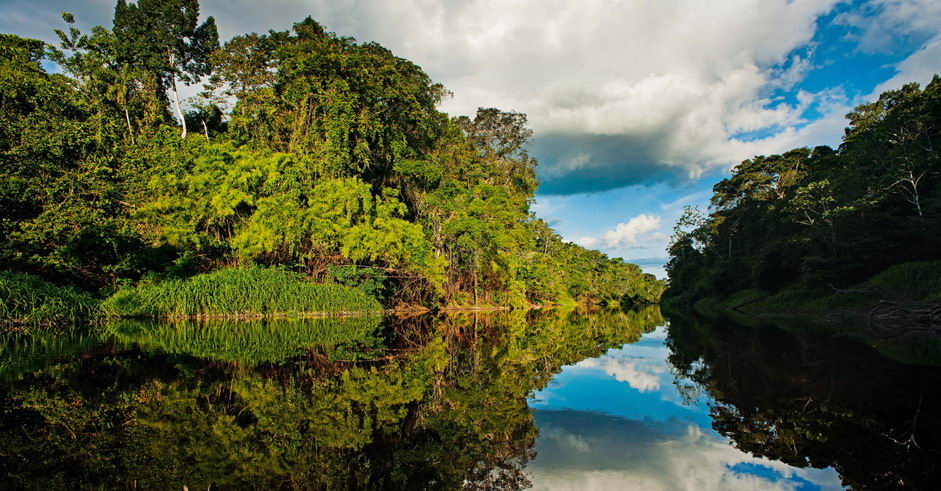
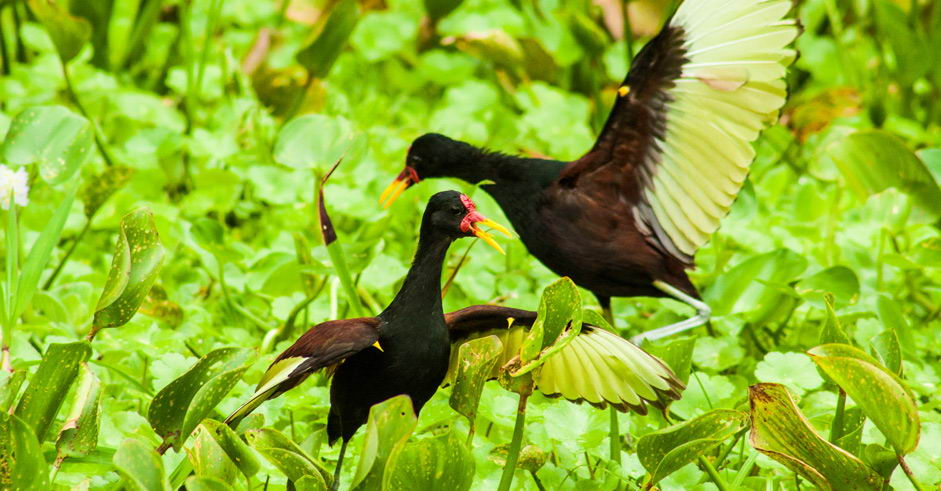

La Reserva Pacaya Samiria (RNPS) es un área de bosque húmedo tropical inundable, que comprende provincias del departamento de Loreto,
tales como: Requena, Alto Amazonas y Ucayali. Su extensión es de 2’080,000 hectáreas, lo cual hace que sea una de las reservas más extensas
de la Amazonía Peruana. En 2015 fue designado como el segundo mejor lugar para la vida silvestre en el mundo.
Turismo de naturaleza
Pacaya Samiria es la segunda área natural protegida más grande del Perú y es uno de los mejores lugares para los amantes del turismo de
naturaleza, ya que cuenta con más de 1,000 especies de fauna y 965 de plantas silvestres. Además, protege ecosistemas de bosques tropicales
húmedos que albergan gran biodiversidad de la Amazonía, reconocida como maravilla natural del Mundo.
Su objetivo principal es conservar el paiche, el pez de agua dulce más grande del Amazonas, al igual que los recursos de flora y fauna de
la zona. Su interior abarca las cuencas de los ríos Pacaya, Samiria y Yanayacu-Pucate.

El corazón de Pacaya Samiria
La laguna más visitada es la famosa cocha El Dorado, considerada como el corazón de la reserva por su diversa fauna. Ubicada en la cuenca
baja del Yanayacu, esta laguna es el destino turístico principal de la RNPS y ejemplo exitoso de emprendimiento en turismo vivencial comunitario.
En cuanto a los ríos, al momento de navegarlos se puede apreciar diversas especies de aves, mamíferos y peces como manatíes, delfines rosados, monos, entre otros.

En contacto con la naturaleza
Dentro de la reserva y en las zonas cercanas, existen aproximadamente 203 centros poblados que albergan a más de 120,000 habitantes. En Pacaya
Samiria se puede encontrar desde las comodidades básicas para un hospedaje, hasta un servicio exclusivo. También se puede viajar en cruceros y gozar
de una experiencia de lujo.
Existen tres circuitos turísticos principales:
1. Cuenca Yanayacu-Pucate: desde la comunidad 20 de Enero, cerca de Nauta, hasta la famosa laguna El Dorado. Es el lugar donde se encuentra la mayor cantidad
de refugios y zonas de campamento a lo largo del río.
2. Cuenca baja y media del río Samiria: visitando las lagunas Yarina, Fortuna y Ungurahui. Además, en San Martín de Tipishca, al inicio de la cuenca, se puede
convivir con los habitantes de la comunidad nativa Kukamakukamiria, quienes también ofrecen varios circuitos por recorrer, tanto a pie como en canoas.
3. Cuenca baja del Pacaya: En esta ruta abundan las lagunas y el bosque permanece inundado gran parte del año.
Datos destacados

Para acceder a la Reserva desde Iquitos,
se debe tomar una van que va hacia Nauta (2 horas de viaje ) y de Nauta
a la Comunidad 20 de Enero, se debe tomar un bote rápido (1 hora de viaje).
En la reserva se puede practicar trekking, caminatas, camping, espeleología,
observación de aves, flora y fauna.
70 m.s.n.m
25°C 35°C
cómo llegar
Luego, de acuerdo a la agencia de viaje, debe ir en un crucero o por carretera al puerto de Nauta y desde ahí transportarse en canoas a los albergues.
Aguaje (Mauritia plexeosa). Es una de las frutas emblemáticas de la selva. En su interior crecen algunas especies de suris, larvas que sirven de comida para
los pobladores debido a su alto contenido protéico. Es usado para helados, jugos y salsas y existe la creencia de que afemina a los hombres por su contenido de hormonas
femeninas (caritina).
El Ojé (Ficus insipida) produce un látex que es purgante, vermífugo y reconstituyente de la salud. Este producto debe ser tomado durante nueve días
seguidos y seguir una dieta de carnes, manteca, sal, picantes y baños.
Ají Charapita.
Reptiles
Charapa (Podocnemis expansa). Es la tortuga más grande del género Podcnemis y se encuentra prácticamente en extinción, debido a la depredación
de sus huevos y la captura de los machos como alimento.
Taricaya (Podocnemis unifilis). De un tamaño menor a la charapa, pueden medir 50 centímetros y alcanzar los 12 kilogramos de peso.
Iguana Verde (Iguana iguana). Existen en la amazonía otras especies como la Iguana camaleón (Dracaena guianensis); o la iguana negra (Tupinambis teguixin).
Animales pacíficos que suelen encontrarse en ramas o piedras para recibir los rayos del sol y hacer la digestión, también han sido capturadas por distracción, como mascotas o para
conseguir su manteca que posee propiedades medicinales.